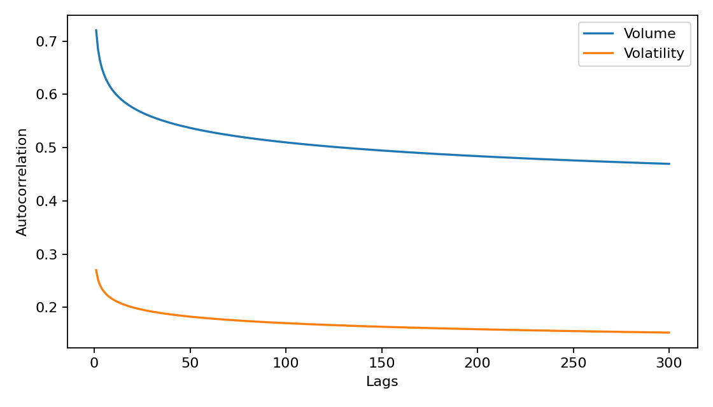
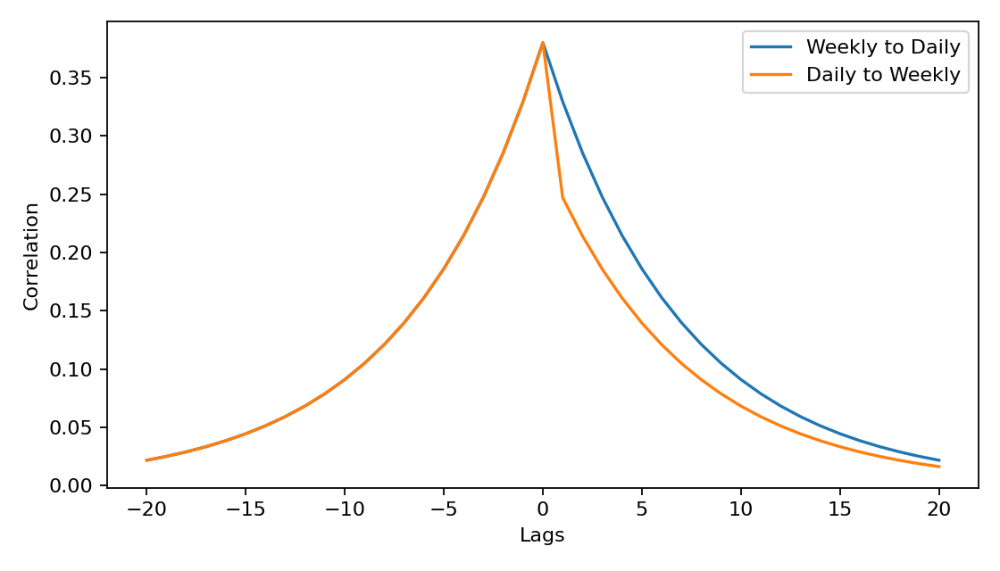
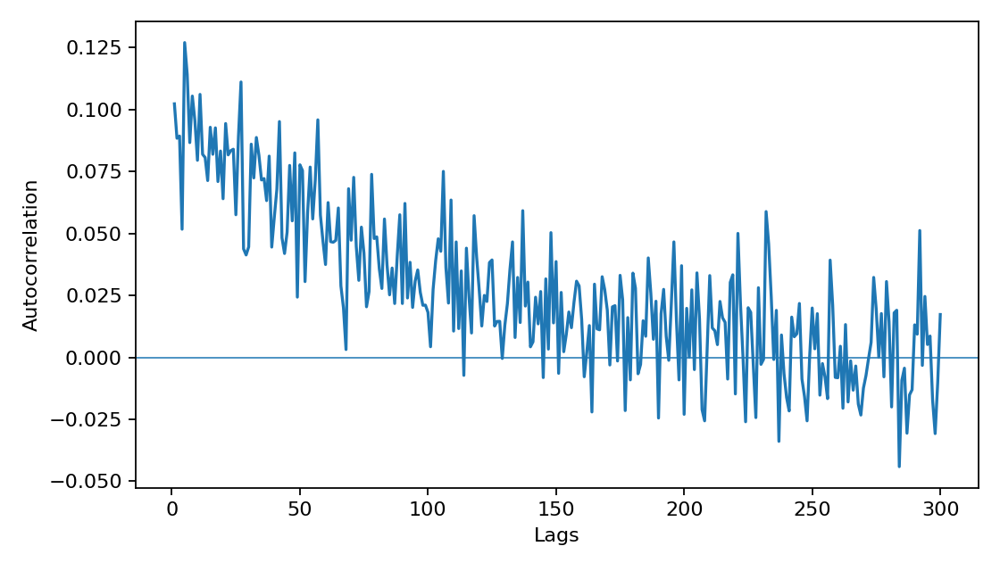
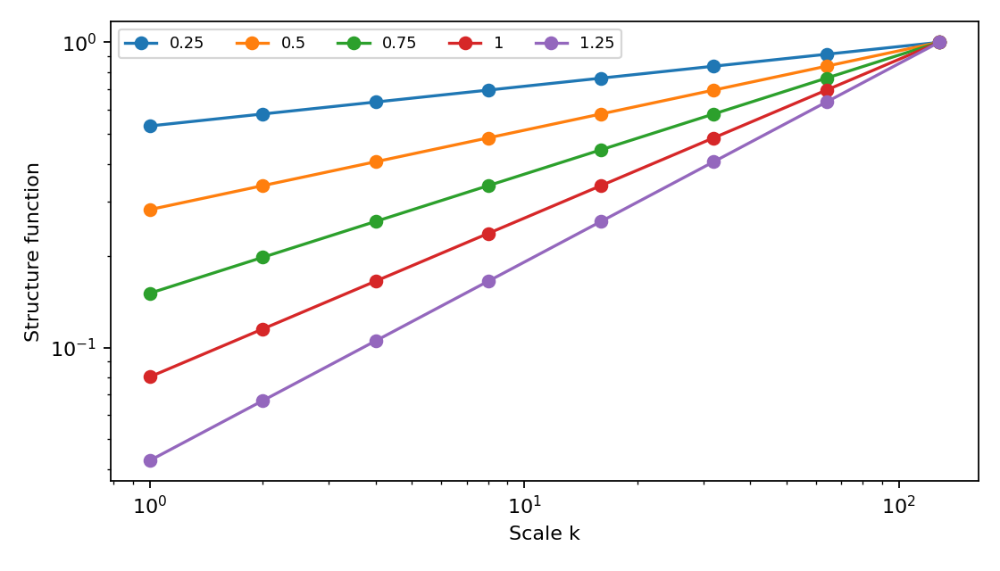
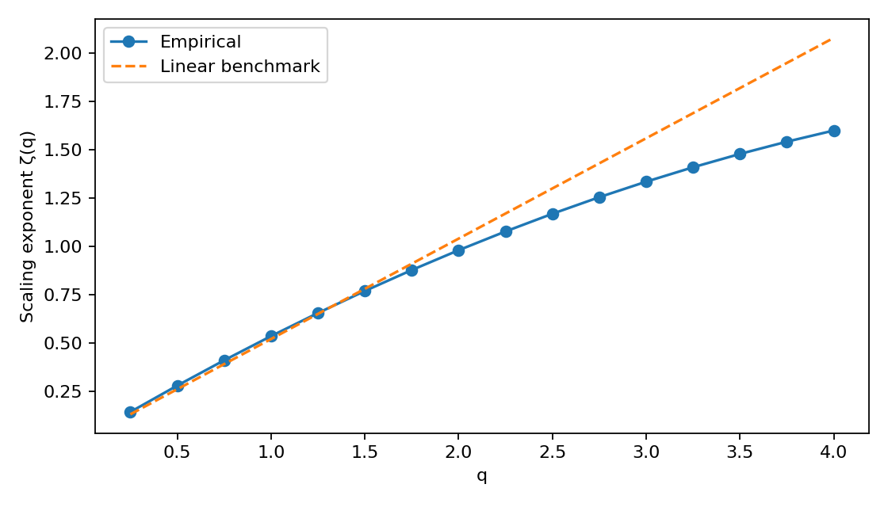
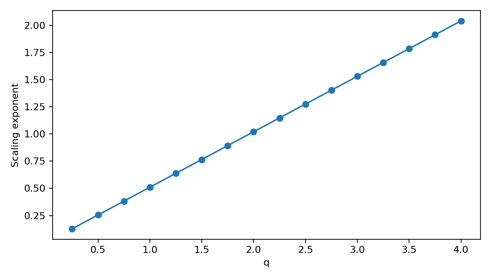

The chapter takes its apparatus from the statistical theory of turbulence. A multiplicative cascade moves energy from large scales to small ones and leaves intermittent bursts behind; the same construction, applied to time rather than space, produces volatility that clusters across investment horizons. What carries over is the statistical geometry — the concavity of ζ(q) that the Scaling view estimates — and not the physical mechanism.
Choose a view
1Information arrivals drive both returns and volume on a financial market
Section 1.4.5 builds volatility as a product, σk = σ₀ ∏ Wi, by splitting an interval in two again and again and giving each half its own random multiplier. The other views show what that construction produces. This one shows the construction.
One row per level. The top row holds the two multipliers that each cover half the sample; every row below splits its parents in two, until the bottom row assigns one multiplier per observation. A column is a branch of the tree, and the volatility at that instant is the product down the column.
The laboratory opens here because this is what the controls beside it act on. Intermittency widens the multipliers, cascade levels adds rows, and levels applied stops the product partway down; the four views after this one measure what comes out.
THE TREE
Multipliers by level and time
Multiplier Wj,t · W = 1 ·
Observation
σt from the levels appliedσt at full depth
Volatility σt (%)
Reading a column. Point anywhere on the tree to follow one instant down it; the panel beside it multiplies that branch out in order. The horizon named on each row assumes daily observations and 252 trading days a year: it names the scale a level acts on, not a tradable interval. Note also that log W has mean −v rather than zero. The normalization that fixes E[W²] = 1 tilts the field slightly towards damping, which is why the tree is not colour-balanced about the midpoint.
The tree imposes no direction of causation between horizons. It is drawn coarsest-first because that is the order the construction runs in, not because large scales drive small ones. The asymmetry reported in section 1.5.4 is a finding about Alcatel; this simulator does not reproduce it, and the Memory view carries the same warning for the coarse-to-fine correlation. A single finite dyadic tree is also not a stationary continuous cascade, and the block seams visible at coarse levels belong to the dyadic grid rather than to any market.
WHERE THE CHAPTER STARTS
An uneven flow of information
The Mixture of Distributions Hypothesis treats the arrival of information as a latent process Kt that neither returns nor volume reveal directly. Returns are drawn around it, rt = √Kt Zt, so a calm interval and a turbulent one differ in how much information arrived, not in the nature of the shocks themselves.
Everything the later views show — fat tails, persistence in the size of returns, behaviour that changes with the horizon — follows from letting Kt vary. This view isolates that one assumption before any of its consequences.
THE LATENT PROCESS
Information intensity through time
Kt = σt²
Nearby observations share multipliers from the coarser levels of the tree, so their information intensity has a common history across scales. Neither returns nor volume observe Kt directly; it is inferred from what it does to them.
THE SAME SHOCKS, TWICE
What varying Kt does on its own
Information intensity variesInformation intensity constant
THE OTHER HALF OF THE HYPOTHESIS
Volume watches the same process
The hypothesis is bivariate. The same information arrivals that widen the distribution of returns also raise the number of trades, which is why the chapter studies volatility and trading volume together rather than treating volume as a control variable. Its Table 1.4 reports persistence for power transformations of both, and the two columns behave quite differently.
This laboratory simulates only the return side. The reconstruction supplies no calibrated bivariate generator, and no synthetic volume series is invented here. The volume half of the argument is therefore carried by the reported table under Original chapter.
THE DISTRIBUTION
How frequent are large returns?
Simulated returnsGaussian with matching mean and variance
THE REALIZATION
Returns through time
One-observation returns (%)
The distribution above uses the selected return horizon. This time series always shows the finest observation scale.
Quiet periods. Active periods.
The chapter distinguishes weak return correlations from persistent correlations in the size of returns. Change q to put more or less weight on large movements.
Autocorrelation at the finest scale
|r|¹Returns r
Sample autocorrelations at lags 1–64, excluding lag zero. Slow decay in one finite simulation does not establish asymptotic long memory.
Coarse and fine volatility
Coarse: |sum of 5 returns|. Fine: mean of the same 5 absolute returns. Positive lags correlate coarse volatility now with fine volatility later. Windows overlap. The finite cascade has no imposed causal direction; this plot must not be read as a reproduction of the Alcatel asymmetry.
One time scale is only part of the picture.
The chapter studies how moments of price increments change with the observation horizon: Sq(k) = E|rt,k|q ∝ kζ(q).
STRUCTURE FUNCTION
Moment q = 1.00
Sample momentLeast-squares fit
Overlapping increments at powers-of-two horizons, with k ≤ N/16 and k ≤ 64. The fitted slope estimates ζ(q). These calculations use the finest-scale series, independently of the return-horizon control.
MULTISCALING
The scaling exponent ζ(q)
Estimated ζ(q)Gaussian reference q/2
Moment orders q = 0.25 to 4, as in the chapter. Curvature in a finite sample is suggestive, not a unique identification of a cascade. Large q gives rare extreme observations substantial weight.
THE ORIGINAL EMPIRICAL STUDY
Volatility, trading volume and long memory
The chapter examines Alcatel from 1 January 1991 to 31 December 2001: 2,633 returns and 2,634 volume observations, supplied by Datastream.
Reported values below are transcribed from the supplied chapter reconstruction. The original time series is not available here; these results are not recalculated by the simulator.
Modern series measured with these same estimators are the subject of Chapter 3, which draws the table below as its reference curve.
THE SOURCE
The chapter in full
7 sections · 4 tables · 7 figures
Reproduced from the supplied chapter reconstruction. Its figures are indicative redrawings rather than the original plots, and its Table 1.4 is the source of the reported values charted below.
Chapter 1
Stochastic volatility, trading volume and long memory
Reconstructed from the supplied pages; schemas and charts are indicative redrawings.
1.1 Introduction
Following the current developments of market microstructure, it is now commonly accepted that volatility is a strong "footprint" of market behavior and activity. As trading volume, it can express market activity and naturally, a positive correlation has been found between these two variables. A commonly accepted interpretation is that the information flow is the "directing" underlying process leading the two variables (see e.g. Clark [1973], Tauchen and Pitts [1983], Andersen [1996]). However, as noted by Harris [1987], trading could also be self-generating.
Various reasons may determine market participants to trade on a financial market. Agents may differ in their risk profiles, liquidity constraints, degrees of information, trading horizons or heterogeneous prior beliefs. The liquidity constraint is the most obvious and earlier introduced in the literature. Information asymmetry is another factor, largely developed to explain exchanges on the market. However, the "No Trade" Theorem introduced by Milgrom and Stokey [1982], states that information asymmetry, taken alone, can not lead to trade and then imply that agents also share heterogeneous prior beliefs. Indeed, why would one accept a trade knowing that his counterpart is better informed than he is, and hence that he would sustain a loss?
Derived from the "No-Trade" Theorem, a formal classification of information arrivals has been proposed in the literature: there can be common knowledge news and non-common knowledge news. Common knowledge news represent public information, by definition homogeneously and simultaneously interpreted. They will generate a price jump without effect on trading volume. Conversely, non-common knowledge news are public or private (asymmetric) information, differently interpreted. Consequently, they influence both volatility and volume.
The Mixture of Distribution hypothesis (MDH) is the ideal framework to study the role of information in market fluctuations as it articulates in a bivariate model trading volume and volatility with information flow and heterogeneously informed agents. Hence, it allows to bridge the gap between microstructural literature and volatility modeling as underlined by Andersen [1996].
Many statistical stylized facts on volatility have been largely documented in the empirical literature. Volatility clustering is ubiquitous in data, and even a hyperbolic decay of the volatility autocorrelation function has been studied since Taylor’s [1986] early work - the so-called "long-memory" of volatility. However, it is not yet clear that this particular feature would be generated only by information flows. In the same time, there is no consensus on how to model this information flow. Andersen [1996] uses a simple low-order ARMA parameterization; Liesenfeld [1998] and Watanabe [2000] show that autoregressive information arrivals cannot fully account for the serial dependence observed in both volume and volatility. Lux and Ausloos [2000] show that interactive and strategic behavior can explain the hyperbolic decay without explicit information-arrival modeling. Bollerslev and Jubinski [1999] model aggregate latent information arrival as a fractional long-memory process. Liesenfeld [2001] introduces a second latent variable, the sensitivity of investors’ reservation prices to information arrivals.
Dealing with long-range dependence in volatility, some econometric studies get opposite conclusions. With high-frequency data, the volatility autocorrelation can show a geometric decrease, hence short memory, while lower-frequency analysis strongly demonstrates the contrary. Public information arrivals may lead to peaks of volatility whose impact decreases quickly; market efficiency implies rapid incorporation into prices. Hence volatility clustering remains unexplained when only public information arrivals are considered.
One possible reconciliation is a multi-component volatility model with both short- and long-run components. Andersen and Bollerslev [1997] consider overall volatility as the aggregation of numerous independent components, each with its own structure. Some components present short-run dependencies, others highly persistent patterns. Aggregated volatility presents a long-run decaying pattern irrespective of sampling frequency. Liesenfeld [2001] similarly distinguishes short-term dynamics directed by information arrivals and long-term dynamics associated with traders’ sensitivities to information.
Müller et al. [1997] propose HARCH (Heterogeneous ARCH), where volatility at time t integrates conditional variances at different scales. Correlations in volatilities from large to fine temporal scales suggest a cascade, a feature well known in developed turbulence and opening the door to the multifractal paradigm. Multifractality is associated with an underlying stochastic cascade that captures long-range dependence (intermittency) at almost all scales. In a stochastic multiplicative cascade, informational shocks at different time scales generate volatility.
The aim of this paper is to introduce the multifractal paradigm into stochastic volatility modeling. We analyse both volatility and trading volume, emphasizing the multi-component structure of volatility and the scaling law characterizing its structure functions.
1.2 Stylized Facts
Empirical evidence clearly shows that almost all financial series present typical features called stylized facts. The particularly important ones are: (1) unit root in raw prices while returns are nearly uncorrelated beyond very short lags; (2) fat tails and leptokurtosis; (3) hyperbolic decay of volatility autocorrelation and volatility clustering; (4) hyperbolic decay of volume autocorrelation and long memory; (5) strong positive contemporaneous correlation between volatility and volume; and (6) asymmetry between sampling frequencies. Volatility fluctuations appear at almost all time scales, even if at large scales the pdf becomes close to Gaussian. Positive correlation from low-frequency volatility to higher-frequency volatility can be fitted by a stochastic cascade scheme.
1.3 MDH and stochastic volatility
1.3.1 A typology of information
Information is multi-form. The temporal dimension of information flow is crucial whereas often neglected. Information about the business cycle and technological innovations affects volatility differently than information about current market liquidity. A complementary typology, discussed by Evans [2002], distinguishes common knowledge from non-common knowledge according to dispersion of interpretations. Common knowledge news is characterized by simultaneous arrival to all market participants and homogeneous interpretation of its implication for equilibrium prices. Public information can take either form because news may not lead to consensus. The common-knowledge case is a limit case in which price adjusts immediately without affecting trading volume.
Private information is obviously non-common knowledge and can be especially relevant in decentralized markets such as foreign exchange, where customers’ order flow to a dealer is not publicly observable. As participants differ in trading horizons, private information is not limited to intraday horizons. The Hypothesis of Heterogeneous Market leads to MC-ARCH (Zumbach and Lynch [2001]) and stochastic cascade volatility models (Breymann et al. [2000]).
1.3.2 What does volatility mean here?
Whereas returns are uncorrelated, long-range correlations in the scale of price fluctuations suggest that an additional stochastic process characterizing price increments is required. Volatility is often referred to as this underlying process. For a volatility process σt predetermined and observable conditional on variables at t − 1, its measure is identical to the conditional variance and volatility is conditionally heteroskedastic. If σt is influenced by a contemporaneous or unobserved stochastic vector, it is not predetermined and volatility is stochastic.
Let the price process {St} be defined on a probability space (Ω, ℱ, P) with filtration ℱt containing full price history and potentially latent state variables. Volatility measures unexpected return fluctuations. Following Andersen [1992], volatility characterizes the complete structure of second-order conditional moments with respect to the relevant information sets.
σ(St, t) = [ limh→0 (1/h) V(St/St−h | ℱt−h) ]1/2
dSt = μ(St, t) St dt + σ(St, t) St dWt
Xt = σtZt
Here Wt is a standard Wiener process and Zt is an i.i.d. mean-zero, constant-variance sequence. σt represents the volatility process of the price innovation Xt and is directed by a latent stochastic process: information flow. Public and private information coexist, and models with many components at different horizons are promising for describing the complex structure of volatility and trading volume. HARCH, MC-ARCH, multi-component SARV and stochastic cascade models are three related modeling directions.
1.3.3 The model
This model relies on Andersen [1996] in bridging asymmetric-information models à la Glosten and Milgrom [1985] and stochastic volatility modeling. The Mixture of Distribution Hypothesis developed by Clark [1973] and Tauchen and Pitts [1983] is a unified framework articulating trading and econometric models of stochastic volatility. Information arrivals lead agents to revise expectations about terminal asset value and generate price fluctuations. Information is differently interpreted because traders have different private signals or "agree to disagree". Trading appears for liquidity, asymmetric information and heterogeneous interpretations.
The market
The model represents a single asset with random terminal value v at a distant future point. Agents trade one unit and there are no transaction costs.
Agents and their information set
There are three categories of risk-neutral traders: noise/liquidity traders, informed agents and the market maker. Agents arrive sequentially, anonymously and randomly to trade one unit at the bid-ask spread or not trade. Noise traders have public information, past transaction prices and the bid-ask spread. Informed agents and the market maker also have private signals, interpretable as superior skill in observing market composition or even insider information.
Transactions
Each information arrival generates a price-discovery phase followed by equilibrium. Noise/liquidity traders act for exogenous reasons such as hedging, stop-loss orders and liquidity needs, and may be trend chasers. Their presence circumvents the No-Trade theorem. Informed traders maximize expected profit conditionally on their signals. Each transaction affects the bid-ask spread; Bertrand competition forces the market maker to set prices under a zero-profit constraint. Transaction prices form a martingale with respect to the market maker’s information set, and inventory management does not matter by construction.
The bivariate process of volatility and trading volume
The MDH justifies introducing trading volume in volatility modeling. Total daily volume is the sum of noise-trader and informed-trader transaction volume:
Vt = NVt + IVt
Noise traders arrive randomly according to a centered Gaussian distribution N(0, m). There are It information arrivals during day t. Each contains a public signal vi and a private signal si, j. Informed traders and the market maker disagree on signal precision and market composition.
ΔP*i, j = P*i, j − P*i−1, j = vi + si, j
with vi ∼ N(0, σv2) and si, j ∼ N(0, σs2), independent. Trader j’s bet is:
Bi, j = α(P*i, j − Pi)
A positive B denotes a purchase and a negative B a sale. Informed transaction volume between two consecutive equilibrium states is:
Vi = ½ Σj |Bi, j − Bi−1, j| = (α/2) Σj |ΔP*i, j − ΔPi|
Market clearing implies ΣjBi, j = 0, hence:
Pi = (1/J) ΣjP*i, j
ΔPi = vi + s̄i
Vi = (α/2) Σj |si, j − s̄i|
Thus informed trading volume depends only on private signals, more precisely their absolute deviations from the mean. Its first two moments are:
μV = E[Vi] = (α/2) √(2(J − 1)J/π) σs
σV2 = V[Vi] = (α/2)2(1 − 2/π) Jσs2 + o(J)
Large signal variances, i.e. poor precision, generate large trading volume. For large J, a Normal approximation is appropriate. Over a day:
IVt = ItΣi = 1Vi
IVt | Kt ∼ N(KtμV, KtσV2)
Vt | Kt ∼ N(KtμV, m + KtσV2)
Information flow, strategic interactions and volatility
At the end of day t, returns may be expressed as:
Xt = ItΣi = 1 ln(Pi/Pi−1) = Σi ηi, ηi ∼ N(0, ση2)
Regret-free bid-ask prices imply that the market maker believes prices are fair and that trading reveals information. Transaction prices form a martingale. Using the benchmark day and a Central Limit Theorem generalization of Clark [1973], returns conditional on information intensity satisfy:
Xt | Kt ∼ N(0, σ2Kt)
Xt | Kt ∼ N(0, Kt)
Xt = Kt1/2Zt, Zt ∼ N(0, 1)
The same mixing variable drives volume and returns:
{Xt | Kt ∼ N(0, Kt)Vt | Kt ∼ N(μVKt, m + σV2Kt)
Information flow may therefore be interpreted as a genuine latent stochastic volatility process governing both returns and volume. Multi-component specifications produce hyperbolic autocorrelation decay and long memory.
1.4 Stochastic volatility, trading volume and long memory
1.4.1 Long memory and multiple components information arrivals
Andersen and Bollerslev [1997] extend the lognormal stochastic volatility model of Andersen [1994] to a multi-component specification, distinguishing shocks from liquidity to business-cycle horizons. Bollerslev and Jubinski [1999] model the long-run information-arrival component as fractionally integrated. Lobato and Velasco [2000] test equality of fractional differencing parameters for volatility and volume and cannot reject equal hyperbolic decay rates. Multiple short- and long-term components can reconcile geometric short-horizon decay with hyperbolic aggregate decay independent of sampling frequency.
1.4.2 Evidence of long memory in volatility and volume
Xt = Kt1/2Zt
If vj, t captures N distinct information-arrival processes, the Exponential SARV model is:
vj, t = αjvj, t−1 + εt
with vj, t = ln(Kj, t) − E[ln(Kj, t)] and 0 ≤ αj ≤ 1. The aggregate latent volatility autocorrelation decays as:
ρ(vt, j) ≈ L1(j) j2d−1
and trading volume similarly:
ρ(Vt, j) ≈ L2(j) j2d−1
Volatility and trading volume therefore appear nearly indistinguishable at this level. However, Ding et al. [1993] show that absolute returns raised to different powers have different decay rates, while volume shows nearly the same hyperbolic decay across powers. This qualitative difference points toward multifractality.

Figure 1.1. Indicative autocorrelations of volume and volatility.

Figure 1.2. Indicative cross-correlations between volume and volatility.
1.4.3 Long memory and scale invariance
For weakly correlated returns with similar variance sizes, the Central Limit Theorem implies convergence of sums toward a Gaussian distribution. Financial returns, however, display slow convergence: apparent scaling persists from one-minute sampling to daily and even four-day frequencies, unlike simulated i.i.d. data with the same tail index. A plausible explanation is long-range dependence in volatility. Scale invariance is valid only over a range of frequencies before a Gaussian cross-over. Andersen et al. [2001] find heteroskedasticity significant even at monthly frequency for FX data. Different slopes for absolute-return moments motivate Extended Self-Similarity and multiplicative cascade modeling.
1.4.4 Multiscaling: towards a stochastic cascade model of volatility
Scaling law behavior of the moments
ρ(|Xt|q, j) ≈ j2d−1
Ding, Engle and Granger [1993] show that while hyperbolic decay holds for different powers, decay rates are not identical. For q from 0.25 to 2, d reaches a maximum around q=0.75 or 1. Temporally aggregated absolute returns exhibit hyperbolic autocorrelation decay across sampling frequencies. A self-similar process is generated by the same probability law at all scales; strict self-similarity requires the same scaling coefficient across absolute moments, while Extended Self-Similarity allows different values.
Quantifying intermittency: the multiscaling analysis
Mandelbrot and coauthors showed that self-similar processes such as fractional Brownian motion exhibit the same degree of detail at regular sampling frequencies. The local Hölder exponent h(t) generalizes the Hurst exponent and characterizes local regularity. A singularity spectrum D(h) gives the fractal dimension associated with sets of points sharing a Hölder exponent. Structure-function exponents ζ(q) are related to D(h) by a Legendre transformation.
|Pt − Pt−k| = |Xtk| ≈ (k/c)h(t)
D(h) = dim ωk(h)
ζ(q) = minh(qh − D(h)), D(h) = minq(qh − ζ(q))
This relation is the multifractal formalism. Multiscaling analysis studies sample absolute moments through structure functions:
E[|Pt − Pt−k|q] = E[|Xtk|q] ≈ c(q)(k/T)qH
For strict self-similarity the scale exponent is linear in q. In a multifractal process:
E[|Pt − Pt−k|q] ≈ c(q)(k/T)ζ(q)
where ζ(q) is nonlinear and concave. Hölder’s inequality yields ζ(q) ≥ ω₁ζ(q₁)+ω₂ζ(q₂), demonstrating concavity. In turbulence, intermittency denotes alternating stability and instability; in finance this is analogous to volatility clustering.
1.4.5 From stochastic cascade to stochastic volatility
Kolmogorov [1941] first exploited cascade schemes for intermittent turbulent flows. The cascade paradigm provides a framework for multiscaling in financial data and formalizes HARCH in a more rigorous hierarchical framework. Large-scale volatility can Granger-cause short-scale volatility, suggesting a hierarchy across scales. The binomial cascade illustrates the multiplicative construction: an interval is repeatedly split and probability mass multiplied by fractions p and 1-p. Generalizations use b cells or random multipliers, producing random multifractal measures.
Stochastic cascade volatility modeling
Apply the multiplicative cascade to volatility. At each instant, fluctuations at large scales are related to fine-scale fluctuations through random multipliers Wk:
σk = Wk σk−1 = WkWk−1 … W0 σ0
σk = σ0k∏i = 0Wi
σ0 is homoscedastic volatility at the lowest frequency. Densifying the discrete cascade leads to a continuous, log-infinitely-divisible model. Eligible generators include log-Normal, log-Levy, log-Gamma and log-Poisson families. Financial applications include Muzy et al. [2001], Lux [2001], Breymann et al. [2000], Calvet et al. [1997], Schmitt et al. [1999, 2000], and Turiel and Perez-Vicente [2002].
1.5 Empirical evidence
In this section, we test the relevance of the MDH model developed above with its extension to volatility modeling.
1.5.1 Data description
The data was provided by Datastream and consists of quoted prices and trading volumes for Alcatel, from January 1st 1991 to December 31st 2001: 2633 returns (differences between price logarithms) and 2634 trading volumes (also in logarithms).
Market return
Volume
Sample mean
0.0019685
7.9304
Standard deviation
1.2162
0.8417
Skewness
-2.0767
0.3422
Excess kurtosis
39.342
2.6633
Jarque-Bera
147025.8
63.8456
Table 1.1: Preliminary statistics
Market returns are highly leptokurtic and negatively skewed; volume has positive skewness and strong kurtosis. Jarque-Bera rejects normality for both distributions.
1.5.2 Fractional integration and semiparametric estimation of long memory in absolute returns and trading volume
Augmented Dickey-Fuller
Phillips-Perron
KPSS
Log-price (level)
-1.5869
-0.1810
1.680*, 0.379*
Log-price (difference)
-47.6011*
-47.5493*
0.091, 0.088
Volatility (abs returns)
-8.3049*
-29.6952*
3.206*, 0.344*
Volume (log)
-7.4934*
-46.0342*
3.534*, 0.368*
Table 1.2: Unit root tests and stationarity test
Correlograms and Box-Pierce statistics are highly significant at distant lags. The MDH long-run proposition is:
ρ(|Rt|, j) ≈ L1(j) j2d−1, ρ(Vt, j) ≈ L2(j) j2d−1, 0 < d < ½
Cross-correlations similarly decay hyperbolically, suggesting subordination to a common latent information-arrival process rather than direct causality.
The Geweke-Porter-Hudak [1983] estimator estimates d in the frequency domain. For long memory, the spectrum has a singularity at zero frequency:
f(ω) = (2π)−1 Σj γj cos(jω)
f(ω) ∼ L(1/ω) ω−2d, ω → 0+
The semiparametric approach imposes behavior only near the origin. With (1 − L)d |Rt| = ηt, the spectral density satisfies:
f(ω) = |1 − e−iω|−2dfη(ω)
ln f(ω) ≈ ln fη(0) − 2d ln ω
Because the original series are non-Gaussian, a less restrictive semiparametric estimator based on the ratio of periodograms at two near-zero frequencies is used (Robinson [1994], Andersen and Bollerslev [1998]):
d̂AP = ½ − ln(F(qω) / F(ω)) / (2 ln q)
d̂_AP
Volatility
0.4327
Volume
0.4718
Table 1.3: Hyperbolic rates of decay for volatility and volume
Both estimates lie between 0 and 1/2: volatility and volume are highly persistent but covariance stationary, with shocks dissipating at a slow hyperbolic rate. Applying a (1 − L)d filter removes the long-run dependence.

Figure 1.3. Indicative autocorrelation after fractional filtering.
1.5.3 Long memory for absolute returns at various powers
Powers
Volatility
Volume
0.25
0.4442
0.4215
0.50
0.4469
0.4250
0.75
0.4426
0.4272
1.00
0.4327
0.4284
1.25
0.4146
0.4288
1.50
0.3828
0.4284
1.75
0.3305
0.4272
2.00
0.2565
0.4251
2.25
0.1737
0.4221
2.50
0.1035
0.4181
2.75
0.0567
0.4131
3.00
0.0301
0.4069
3.25
0.0162
0.3996
3.50
0.0090
0.3908
3.75
0.0054
0.3806
4.00
0.0035
0.3688
Table 1.4: Fractional differencing parameter d̂ for moments of different powers
The estimated d’s show long memory in power transforms of absolute moments. Volume keeps almost the same fractional differencing parameter, while volatility differs sharply: its decay rate is maximal around q=0.5 and decreases almost to zero by q=4. Repeating the test on stock indices and exchange rates gives the same qualitative conclusion. Ding et al. [1993] first reported this stylized fact. This is where volatility and volume stop behaving in the same manner. Different decay rates imply different slopes of scaling laws and cannot be matched by a strictly self-similar process: a signature of multifractality.
1.5.4 Stochastic cascade and scale dependencies
Müller et al. [1997] propose a formal test for stochastic cascade behavior by testing correlations between volatilities on large and fine time grids. Lagged correlations indicate information-flow structures in the Granger-causality sense. Symmetry at positive and negative lags suggests synchronous information flow; statistically significant asymmetry suggests directional flow. Fine volatility is the mean absolute daily return averaged over five observations, while coarse volatility is the absolute return over a weekly interval. The maximum correlation is at lag zero, but at the first two nonzero lags coarse volatility predicts fine volatility better than the reverse, with statistically significant differences. Results across many financial assets are similar.
These findings converge with Müller et al. [1997] on exchange rates: there appears to be a flux between scales, interpreted as influence of long-term traders on short-term traders. Ghashghaie et al. [1996] draw a parallel with the energy flux in turbulence, cascading from large to small scales and often modeled as a multiplicative cascade with multifractal properties.
Figure 1.4. Cross-correlations at different horizons: weekly → daily (coarse to fine) against daily → weekly (fine to coarse), with the asymmetry between the two directions and its Gaussian band. Redrawn from the printed page; the plotted values are read off that plot rather than recomputed, and the original series are not available here.
1.5.5 Scaling and multiscaling analysis
Multifractality extends self-similarity to allow different scaling relations for different structure functions. The main application is to characterize absolute-return moments at different powers:
E[|Pt − Pt−k|q] = E[|Rtk|q] ≈ c(q)(k/T)ζ(q)
If the process is scale-invariant, ζ(q)=qH. With multiscaling, ζ(q) is nonlinear and concave. It is estimated by linear regressions in log-log form for q from 0 to 4 by increments of 0.25:
log E[|Pt − Pt−k|q] ≈ log c(q) + ζ(q) log(k/T)
The resulting structure-function exponents are not linear but concave. Scaling relations therefore depart from the linear benchmark of strict self-similarity. Similar results are reported for numerous financial series. Curvature depends on intermittency; exchange rates during the European Monetary System show stronger curvature around realignment jumps. Dacorogna et al. [2001] discuss scaling breakdown at very high frequencies, plausibly related to microstructure effects such as seasonality, bid-ask bounce and inventory management. Multiscaling has implications for risk management and market timing.
LeBaron [2001] shows that a three-component stochastic-volatility model can exhibit apparent multiscaling, but the complexity of stochastic-volatility estimation opens the door to cascade models. For continuous cascades, the singularity spectrum has a known closed form. Lux [2001a] provides an early econometric estimation of a multifractal model using GMM.

Figure 1.5. Indicative scaling of structure functions in a log-log plot.

Figure 1.6. Indicative resulting scaling exponent ζ(q), showing concavity relative to a linear benchmark.
1.6 Conclusion
In this chapter, we introduce a new paradigm for modeling volatility: the multifractal paradigm that leads to apprehend volatility as a stochastic cascade. A multi-components volatility model allows to describe intermittency (volatility clustering) at almost all data frequencies and replicate the hyperbolic decay of volatility autocorrelation. Whether components are uncorrelated or explicitly dependent through a stochastic cascade, representation of volatility across time scales is likely to be central. Volatility aggregation has direct implications for forecasting, risk management, market timing and trading models. Gençay et al. [2002] describe the true data-generating process as a complex network of layers, each corresponding to a particular frequency.
The instantaneous correlation between volatility and trading volume is robust and both variables exhibit similar hyperbolic decay rates. However, trading volume differs from volatility under the Ding, Engle and Granger [1993] test. Moreover, positive volatility-volume correlation is only globally valid; careful scrutiny shows it is time-varying and can become negative during market stress. Combining jump-detection tests with this time-varying correlation may help understand breakdowns in the usual positive relation.
Appendix: Simulated price using a log-normal random generator
We simulate a 2600 points-length path of a typical log-normal price using the Box-Muller algorithm. We then apply the same multiscaling analysis than for Alcatel. The result shows that linearity is an acceptable hypothesis graphically.

Figure 1.7. Indicative multiscaling analysis for a simulated log-normal price: approximately linear scaling exponent.
Selected notes from the original pages
Mandelbrot [1968] described volatility clustering as large changes tending to be followed by large changes, of either sign, and small changes by small changes. Absolute returns are preferred to squared returns because they are less dominated by extreme observations and their autocorrelation is more stable under sample-size changes. The empirical Alcatel study uses a large French equity because comprehensive FX trading volume was not available for the period. Holiday corrections were made for weekly intervals. The original article also cites formal tests by Lobato and Velasco [2000] and Bollerslev and Jubinski [1999] for equality of long-memory parameters.
CHAPTER TABLE 1.4
Persistence across power transformations
Absolute returnsTrading-volume variable
The reported d(q) varies much more across powers of absolute returns. Volume is relatively stable at lower powers and declines at higher powers. These fractional-dependence estimates are different quantities from the structure-function exponents ζ(q).
Read the reported numerical values
Power q
Volatility d̂
Volume d̂
The chapter’s argument
Information arrivals provide a common latent driver for returns and trading volume in the Mixture of Distributions Hypothesis.
Heterogeneous horizons motivate several volatility components and persistent aggregate dynamics.
Power transformations and cross-scale dependence expose a richer structure than a single persistence measure captures.
A stochastic cascade offers a framework for representing multiscaling. The chapter also discusses how other multicomponent models can produce apparent multiscaling.
What this laboratory implements
The chapter’s Gaussian-mixture relation rt = √KtZt is implemented as rt = σtZt, with Kt = σt². The lognormal cascade is a finite computational illustration of its multiplicative construction. The Gaussian benchmark has constant σt.
The chapter also studies trading volume, but does not supply a complete calibrated bivariate simulator in the reconstruction. No synthetic volume series is invented for this laboratory.
Model choices and fidelity to the chapter
A finite lognormal cascade
Start with N = 2J observations and recursively split the interval into two equal parts. At each level, each child interval receives an independent positive multiplier, shared by all observations inside it. For each observation, multiply the J factors along its branch.
The lognormal mean is chosen so E[W²] = 1. Therefore E[σt²] = σ₀² across realizations. A particular sample need not have that exact variance. Returns and σ are expressed in percentage points. At λ² = 0 the cascade exactly equals the constant-volatility benchmark for the same seed.
Original framework and implementation choices
The source describes multiplicative cascades and lognormal generators. The finite dyadic tree, its variance normalization, parameter ranges, seeded Box–Muller draws, chart binning and regression horizons are explicit implementation choices for this illustration. They are not claimed to be the author’s original calibrated program. A single finite tree is not a stationary continuous cascade and does not impose a directional flow between horizons.
Reading the outputs
The return horizon uses non-overlapping sums; a final incomplete block is discarded. Histograms cover the full sample range. Their Gaussian overlay matches the sample mean and population variance. Excess kurtosis is the fourth central moment divided by variance squared, minus 3, without a small-sample correction. Tail frequency counts deviations beyond three sample standard deviations from the sample mean. Memory and scaling use the unaggregated series; high moments are sensitive to extreme observations.
All reported Alcatel values are static transcriptions from the supplied reconstruction. The regenerated charts elsewhere use only simulated data. This first version stays within Chapter 1’s framework and includes no later rough-volatility model or Chapter 2 data exchange.
![Three panels. Turbulence: a cascade carries energy from large scales to small ones, producing intermittent bursts. A common statistical signature: the moments of increments scale as E|ΔX|^q ~ τ^ζ(q), and ζ(q) is a straight line for a monofractal but a concave curve for a multifractal. Financial markets: a return series with volatility clustering, across horizons from intraday to yearly. The correspondences are velocity increment to return, energy dissipation to volatility, and spatial scale to time horizon. Same statistical geometry, not the same physical mechanism.](./figures/turbulence-to-multifractal-volatility.png)